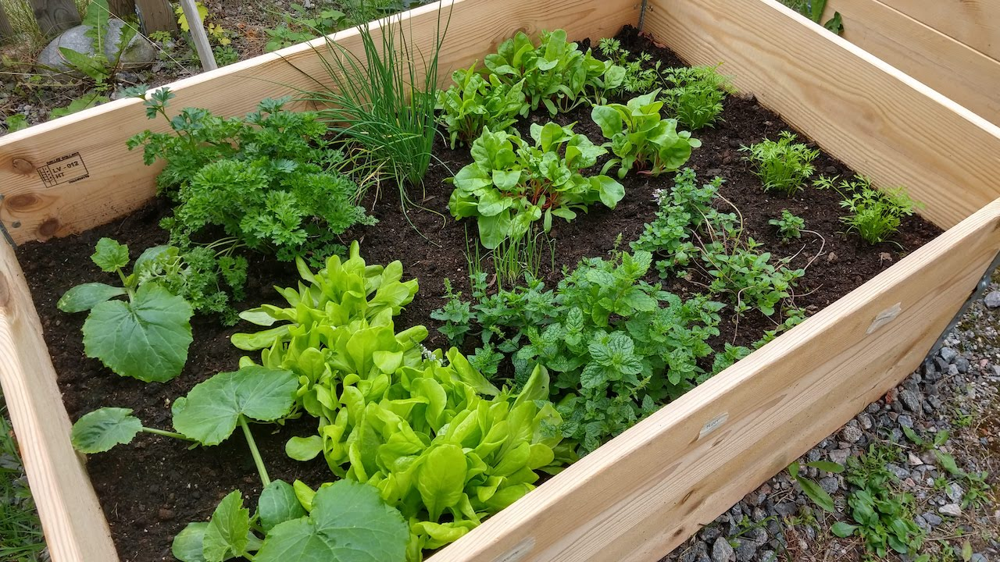
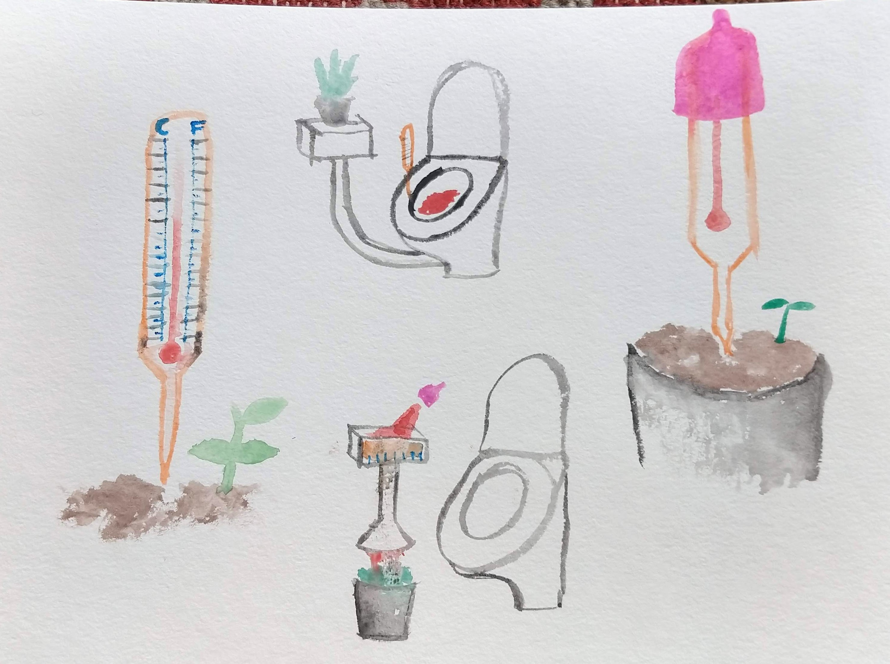
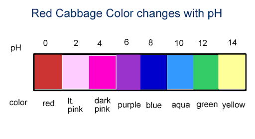
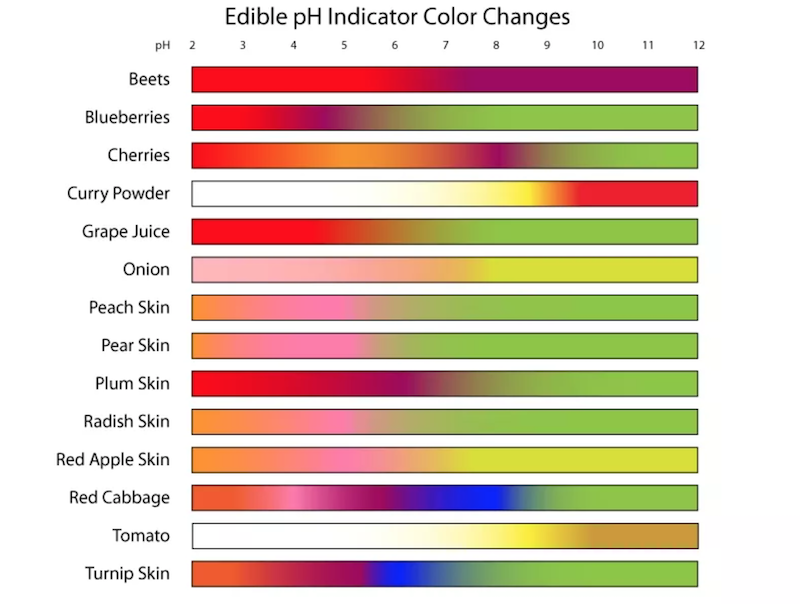
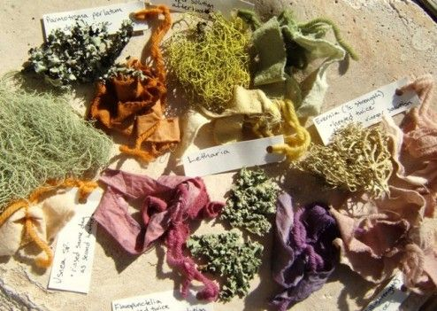
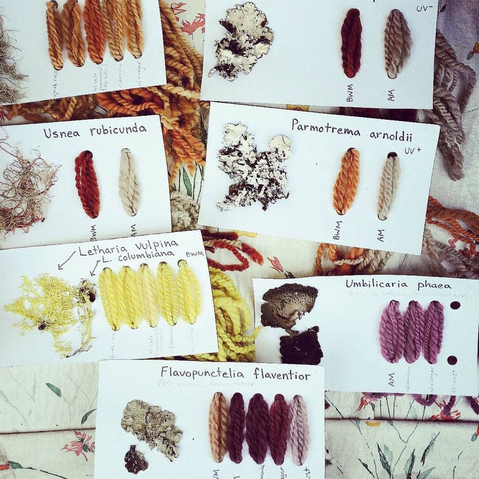
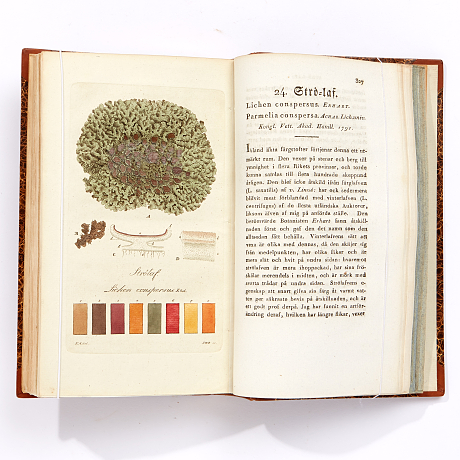
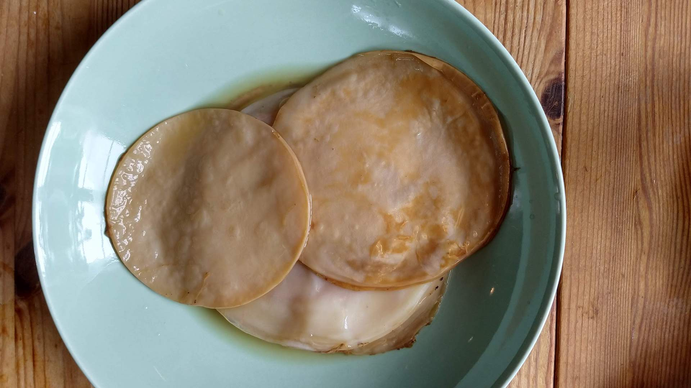
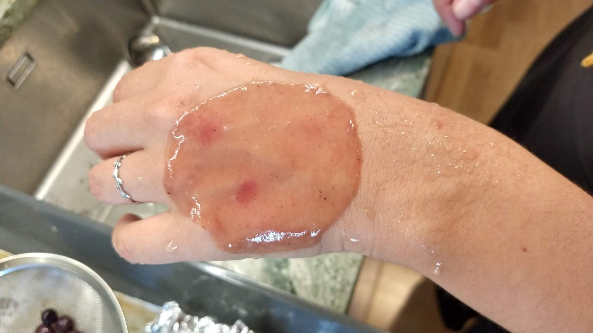

🌾🐝👩🏽🦱 notes on multispecies encounters and women's bodies

feeding plants menstrual blood
I feed my plants my menstrual blood. For me this feels like a special relationship, a multispecies relationship: a relationship of care/nurturing between human and plant. Sometimes I feed my blood to plants I can later consume, such as lettuce. I just started an outdoor garden, I'll try using my blood as a fertilizer. I feed you, you feed me.
What contents does my menstrual blood contain that nurture plants? How does what I eat affect the contents of my menstrual blood?
not only benefits the plant, but encourages bodily knowledge (looking, touching the blood)
my messy, leaky body becomes useful (what makes something useful anyway?) - my blood isn't waste anymore.
speculations
- a kit that helps you determine the contents of your blood, tools for mixing and making food for your plant
- a kit that helps you determine how what you eat, your microbiome, affects your menstrual cycle
- a device that takes the blood from your toilet / bathroom and transfers it to the plant.
fluid speculations with watercolor:
plants that aid in understanding women’s health
plants as pH indicators
butterfly pea flower / Clitoria ternatea: blue flower turns purple when mixed with acid (lemon)
I purchased seeds last spring and started growing this plant.


Could this plant aid in measuring out vaginal pH? urinary tract infections? yeast infections? bacterial vaginosis?
Red cabbage contains a water-soluble pigment called anthocyanin that changes color when it is mixed with an acid or a base. The pigment turns red in acidic environments with a pH less than 7 and the pigment turns bluish-green in alkaline (basic) environments with a pH greater than 7.


Other food that can indicate pH

Natural Acid and Base Indicators
Poinsettia pH Paper: Holiday Chemistry Project
Litmus paper is a type of pH paper made by treating the paper with natural dyes from lichens.
https://www.thoughtco.com/what-is-litmus-paper-3976018
Litmus - Wikipedia Roccella tinctoria - Wikipedia


Svenska lafvarnas färghistoria
biomaterials and women’s health
SCOBY (or other bio cellulose) as an intimate fabric
 more pictures of dried scoby soon...
teas and natural remedies / medicinal plants
pollution and environmental factors
- hormonal levels are detected in water sources / lakes and rivers, the amount of women taking the contraceptive pill can be determined through the city’s water system - hormones in pee end up in water
- more polluted places have a harsher effect on women’s bodies - less fertility, less regular menstrual cycles…
lifecycle of menstrual hygiene products
- instead of waste, can these products become compost? Turn and Flow
- can these products be consumed by other species? insects that eat plastic? cotton?
climate crisis and gender equality
Environmental degradation disproportionately affects low-income countries and the most marginalized women, who have contributed least to the crisis . The destruction of women’s livelihoods, which depend heavily on the natural environment, contributes to rising food insecurity and morbidity and increases the burden of unpaid care and domestic work.
Globally, 7 per cent of employed women are working in agriculture, forestry and fisheries, and only 13.8 per cent of landholders are women.